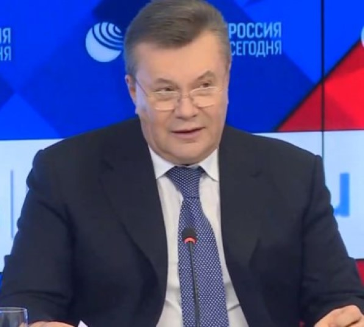

Прізвище
Янукович
Ім`я
Віктор
По батькові
Федорович
Дата народження
9 липня 1950
Стать
Чоловіча
Дата зникнення
26 лютого 2014
Місце зникнення
Київ
Запобіжний захід
Тримання під вартою
Стаття звинувачення
СТ.115 Ч.2 П.1
Віктор Федорович Янукович
Також відомий як :
- Дон
- Большой Дон
- Овощ
- Хам (нібито ще тюремне поганяло)
- Чивокуня (прізвище задом-наперед)
- Межигірський хряк
- Вінценосний
- Пеньок Межигірський(за несамовиту любов до пеньків)
- Вітя
- Яникевич
- Фьодрич
- Якунович
- Янкович
- Янукевич
- Янкевич
- Якубович
- Яник
- Ялинкович(після падіння на голову вінка біля могили невідомому солдату)
- Серпень 1972 — квітень 1973 — автоелектрик
- Квітень 1973 — листопад 1976 — механік
- Листопад 1976 — лютий 1984— директор автобази, ВО «Орджонікідзевугілля»,місто Єнакієве
- Лютий 1984 — вересень 1987 — директор автобази, ВО «Донбастрансремонт», місто Донецьк
- Листопад 1987 — листопад 1988 — заступник директора з автотранспорту дирекції матеріально-технічного забезпечення та транспорту, Донецького державного ВО вугільної промисловості
- Листопад 1988 — травень 1989 — заступник начальника відділу матеріально-технічного забезпечення та транспорту, Донецьке головне територіальне управління вугільної промисловості
- Травень — вересень 1989 — в.о. директора, вересень 1989 — березень 1991 — директор, ВО «Донбастрансремонт»
- Травень 1991 — січень 1994 — генеральний директор, об'єднання підприємств «Донбастрансремонт»
- Січень — вересень 1994 — генеральний директор, об'єднання промислового транспорту вугільної промисловості «Укрвуглепромтранс»
- Вересень 1994 — серпень 1996 — генеральний директор, Донецького територіально-виробничого об'єднання автомобільного транспорту «Донецькавтотранс»
- Серпень — вересень 1996 — заступник голови; вересень 1996 — травень 1997 — 1-й заступник голови; 14 травня 1997 — 21 листопада 2002 — Голова Донецької облдержадміністрації та Голова Донецької облради
- 21 листопада 2002 — 5 січня 2005 — Прем'єр-міністр України, член Ради національної безпеки і оборони України
- 4 серпня 2006 —18 грудня 2007 — Прем'єр-міністр України, член Ради національної безпеки і оборони України
- з 25 лютого 2010 — 22 лютого 2014 — Президент України, голова Ради національної безпеки і оборони України
- з 26 лютого 2014 — до сьогодні — втік і не повернувся
Володіння мовами :
- Англійська - Beginner
- Українська - Elementary
- Російська - Native
Судимості :
- 1967 рік - грабіж у складі злочинного угруповання «Пивновка» - засудили на 3 роки, стаття 141 частини 2 КК УРСР. Випущений достроково за зразкову поведінку.(відбував покарання 1 рік 7 місяців в колонії Кременчука)
- 1970 рік - заподіяння тілесних ушкоджень середньої тяжкості, засудили на 2, стаття 102 КК УРСР.
- У 1978 році обидва вироки були скасовані через відсутність складу злочину.
Нагороди :
- Golden loaf award - 2013
- Golden toilet bowl award - 2010
- Власник колекції хутряних шапок